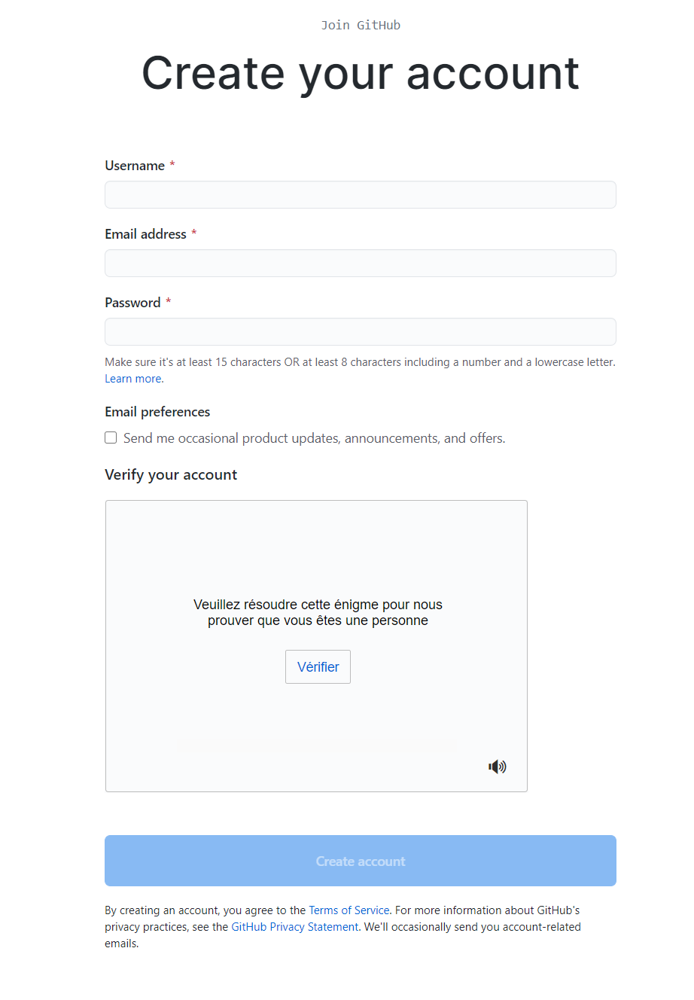
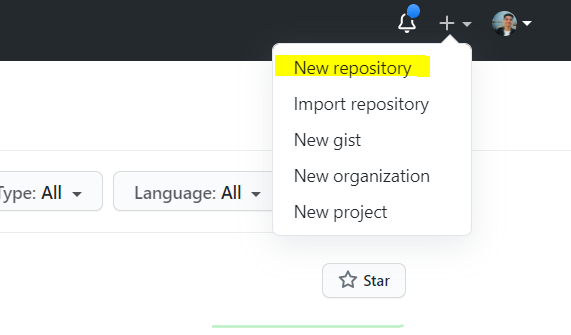
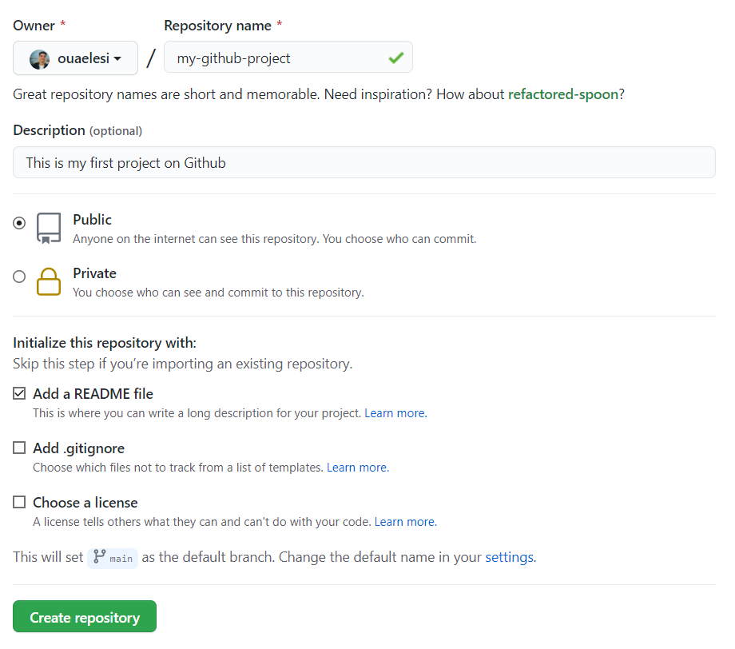
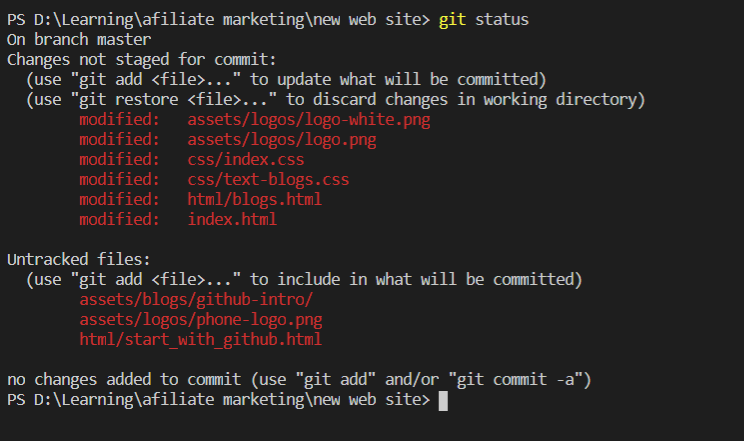
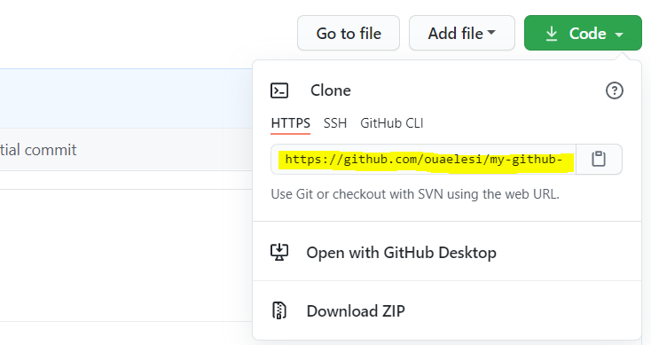

. Host Your Website With Github Pages
. NEEDS
. What is github pages ?
. Create A Github Repository
. Clone the repository
. change my current directory
. HELLO WORLD
. Deployment
. and you're done!
. Resources
. other Blogs
Start with Git and Github
[for begginers]

For new software developers and existing riders, it is always difficult to manage and choose the right tools, platform, or technology to showcase their skills and make progress in the business. We wonder exactly which platform would be best for developers to work on, to get maximum benefit and satisfaction
There are tons of open source development platforms available in the developing market but only one name that comes first in my mind is GITHUB. It is the one-stop station for enterprise creation and development, and attracts attention for long hard work. The percentage of people who use it is also high. So let's try to learn some principles about git and github
in this blog we will provide for you some great information about
this topic and we will give the first step to start using this great
tools so
let's get started
What is Git and Github and what's the difference between
them?
Git and Github are not the same, Git is a an open source version control tool build by some developer in 2005, Github is a platform founded in 2008 that makes tools which integrate with gitTo be very clear about exactly what GitHub is, it is a file or code sharing service for collaborating with different people.
GitHub is a frequently used software that is often used for version control. Useful when more than one person is working on a project. Suppose, for example, that the software developer team wants to create a website and everyone has to update their code simultaneously while working on the project. In this case, Github helps them build a central repository where everyone can download, modify, and manage code files
you don’t need Github to use Git but you need Git to use Github
There are many alternatives to Github, such us GitLab, BitBucket, and "Host-your-own" and they are all completely optional. You don't need to use a remote control to use Git, but it will make sharing your code with others easier.
FOR MOR INFORMATIONS WATCH THIS VIDEO
1
Why is Github so popular?
GitHub has many advantages but many people often doubt why not using Dropbox or any cloud-based system? Let me take the same example forward to answer this question. Suppose that more than two software developers are working on the same file and want to update it simultaneously. Unfortunately, the person who saves the file first will take precedence over others. While on Github, this was not the case. Github documents and reflects changes in an organized way to avoid any clutter between any of the uploaded files.
So, by using the centralized GitHub repository, it avoids all confusion and working on the same code becomes very easy.
2
Why every programmer should use Github ?
Don't be surprised why a large portion of developers use its services. It is an all-in-one package for users that makes them comfortable by providing a large number of toolkits. Hence, allowing developers to develop their skills on the best practices programming platform. It gives the opportunity to make a name for ourselves by exposing the developing skills to the world through innovative inventions, which could be beneficial for a career in the software development sector.
We will go through the main points of the advantages of using GitHub services.
1- Easier version control
One of the main reasons for using GitHub is that it makes it easy for developers and programmers to control the version of code they are working on like JavaScript, PHP, Python, etc. The toolkits we get from GitHub make it easy for us to convert work in any previous version, and thus better control over the code
2-The great graphical interface :GitHub's graphical interface provides developers with easy access to its repository. We can use it to store and manage our code or find any data from the commit list plus the ability to see any change made there. Moreover, it will help the developers promote their hard working projects among a group of coding buddies and they can review or guide them in a specific job to get the job done and get recognized. The repository acts as a library and marketing tool for programming efforts
3- Gist
Gist is a type of Pastebin app that can be used to store simple
texts or shortcodes. GitHub creates a Gist to store and share
short scripts from codes or scripts with other programmers. They
can be thought of as small projects to create a repository of
its own. Like the main repository, you can restore and see
changes in any Gist. It has two options that take advantage of
the Gist code according to the needs of the developers.
- Public
- private
Audience is the default option to share it en masse while the
private option is the option that you can hide code or text from
other users. Only you can see it
GitHub Collaboration Tool is a service to collaborate on your business without any hassle. One can work with any developer on any project who wishes to work.You can give the rights to work on your codes in the repository by submitting the access rights to anyone or everyone.
- Any user can fork out a copy of the project to their system to
work on it. Thus, the main copy will be untouched and if the
improvisation in the forking copy worked well then by the help
of Pull Request, the main copy can be converted like the forking
one.
- Pull Request is the procedure to make an application for the
changes or ongoing work in a code or project to get the approval
from the GitHub community.
- GitHub saves a lot of time and effort by tracking bugs or
changes via the repository with quick identification of codes or
files.
3
Git installation
Now we need to install Git's tools on our computer. We’ll use CLI to communicate with GitHub.
For Ubuntu:
1. First, update your packages.
2. Next, install Git and GitHub with apt-get
3. Finally, verify that Git is installed correctly
4. Run the following commands with your information to set a
default username and email when you’re going to save your work.
~ $ sudo apt update
~ $ sudo apt-get install git
~ $ git --version
~ $ git config --global user.name "your username"
~ $ git config --global user.email "example@mail.com"
4
Create a Github account
To create your first Github account, you must go through this link and fill in your information
5
Create a new repository:
Create a new repository by clicking the “new repository” button on the GitHub web page.
Pick a name for your first repository, add a small description, check the ‘Initialize this repository with a README’ box, and click on the “Create repository” button.
Well done! Your first GitHub repository is created
6
Code management
Let's say you have a local folder with some code projects and you want to start tracking your progress with git
1. Navigate to your working folder
2. Initialize a git repository
3. Check status.

In your terminal, switch to the folder (also known as the directory) you want to start tracking. Type:
~ $ cd [name of your folder]
In your project type:
~ $ git init
To check the status if your repository type:
~ $ git status
the output can look something like this:
4. Add all files for tracking

This also called as staging files/ adding files to the staging area.
~ $ git add .
The git add plus . argument indicates that all your files & changes for tracking.
5. Add selected files for tracking~ $ git add [file or folder name]
This helps us to add only selected files to the staging area when we don't want to commit all files at once
6. Unstage all files~ $ git reset
This command helps us to unstage all files at once.
7. Unstage a particular file~ $ git reset [file or folder name]
This command helps us to unstage only a particular file at once that we don't want to include for the next commit.
8. Persisting your workAt this point you've added the files to a so called staging area. A place where Git is tracking your files. To make the change permanent you need to commit the files. To do so you create a commit with the git commit command. A commit represents a saving point in the history of your repo. Type the following to create a commit: git commit -m "first commit"
This commits all of your files, adding the message "first commit". For future commit messages you will want to be more descriptive in your description to convey what type of change you've made
9. Connect your local Git repo with GitHub.A Git repo is good on your machine but at some point you want to have backup of your files somewhere and also invite other people to work with you on your repo. One such great place to do so is GitHub. Remember we've already created a repo on GitHub so the only thing we need to do is to connect our local Git repo with GitHub. The command 'git remote add' will do just that. Type the following command: Note, before you type the command go to your GitHub repo page to find the 'repository URL'. You will use it in the below command. Replace 'repository_name' with your GitHub URL.
~ $ git remote add origin https://github.com/username/repository_name.git
this image shows you how to find the repository URL
This creates a remote, or connection, named "origin" pointing at the GitHub repository you created earlier.
10. Send local files to GitHubSo far you've created a connection between the local repo and the GitHub repo. Let's send these files to GitHub with the following command git push, like so:
~ $ git push -u origin main
This sends your commits in your "main" branch to GitHub.
11. To add more changesIf you want to continue making changes and pushing them to GitHub you’ll just need to use the following three commands:
~ $ git add .
~ $ git commit -m "type your commit message here"
~ $ git push
7
Resources
Books
Other blogs
learn git hub pages
learn git hub pages
learn git hub pages
learn git hub pages
learn git hub pages
TECHNOLOGY
Table of Content